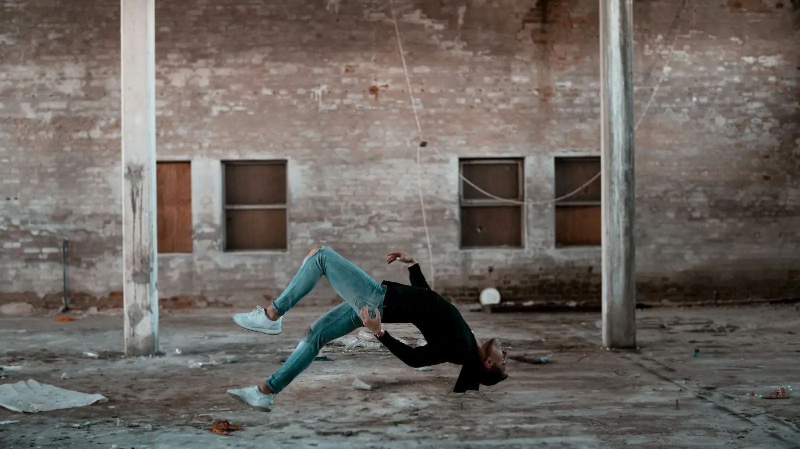
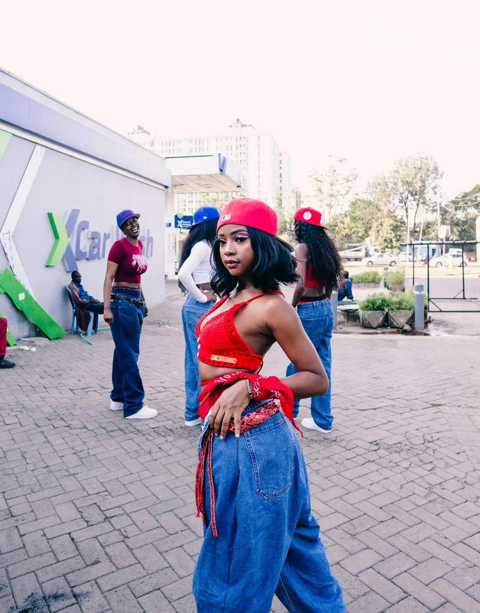
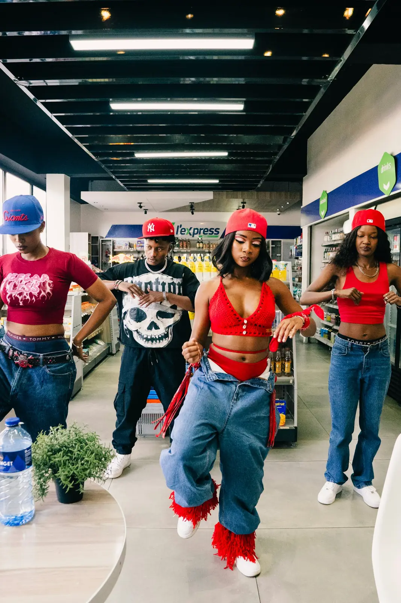
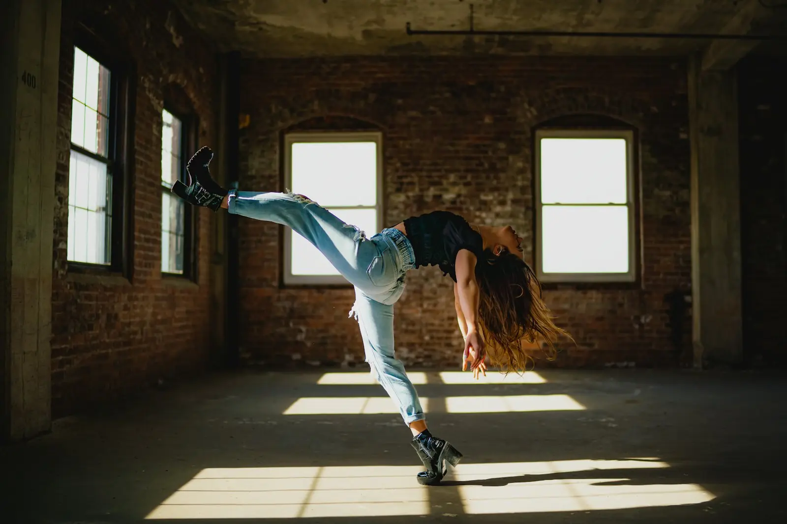
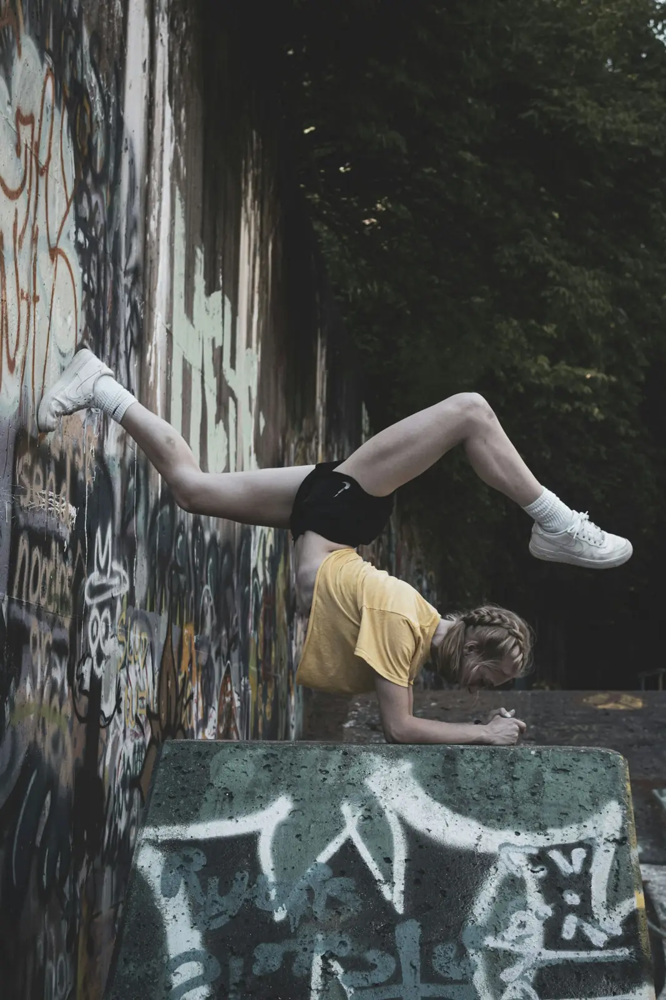

1973
המסיבה בברונקס
די־ג׳יי קול הרק מנגן את הברייקים בלופ, ורקדנים ממלאים אותם בתנועה. נולדים הברייקינג והסייפר, המעגל שבו רוקדים בתורות.
 הופ
הופריקוד שנולד ברחוב, מדבר בקצב, ונמדד בגרוב. כאן לומדים מאיפה הוא בא, ממה הוא בנוי, ואיך יוצרים בו כוריאוגרפיה.

ב-11 באוגוסט 1973 ארגנה סינדי קמפבל מסיבה בחדר המשותף של בניין מגורים בשדרת סדג׳וויק 1520, בברונקס. אחיה, די־ג׳יי קול הרק, שם לב שהקהל משתגע בדיוק בקטעים שבהם השיר נשאר רק עם תופים: הבְּרֵייק.
הוא התחיל לנגן את אותו ברייק משני תקליטים זה אחרי זה, כך שהוא נמשך דקות. הצעירים שרקדו בדיוק בקטעים האלה נקראו בי־בויז ובי־גירלז, ומהם יצא הברייקינג.
היפ הופ הוא לא רק ריקוד. זו תרבות שלמה שנבנתה על ידי צעירים שחורים ולטינים בניו יורק: די־ג׳יינג, ראפ, גרפיטי וברייקינג, ולצדם מה שנקרא "ידע": הכרת השורשים והכבוד אליהם.
1973
די־ג׳יי קול הרק מנגן את הברייקים בלופ, ורקדנים ממלאים אותם בתנועה. נולדים הברייקינג והסייפר, המעגל שבו רוקדים בתורות.
1977
בפרזנו שבקליפורניה, בוגלו סאם מקים את להקת האלקטריק בוגלוז ומפתח את הפופינג: כיווץ שרירים חד על הקצב. בלוס אנג׳לס, דון קמפבל רוקד כבר מתחילת העשור לוקינג: עצירות פתאומיות, הצבעות וחיוך גדול.
1983
"Wild Style", "Flashdance" ומיד אחריהם "Beat Street" מביאים את הברייקינג למסכים בכל העולם. קבוצות כמו רוק סטדי קרו הופכות לאגדה, וילדים בכל מקום מנסים סיבובים על הגב.
1990
עם הראפ והניו ג׳ק סווינג נולדים ריקודים חברתיים: ראנינג מן, רוג׳ר ראביט, קאבג׳ פאץ׳. בניו יורק מתפתח גם ריקוד האוס, מהיר וקליל, ממועדונים של מוזיקת האוס.
2005
בדרום לוס אנג׳לס צעירים מפתחים את הקראמפ: סטומפים, דחיפות חזה ותנועות זרועות כבדות, אנרגיה שפורצת החוצה. הסרט התיעודי "Rize" מציג אותו לעולם.
2008
תוכניות טלוויזיה ותחרויות בינלאומיות הופכות את "הקרו" למופע: קבוצה שרוקדת כוריאוגרפיה מדויקת, עם מערכים, אשליות ותמונות קבוצתיות. ככה נראית כוריאוגרפיה עירונית עד היום.
2024
באולימפיאדת פריז הברייקינג נכנס לראשונה לתוכנית האולימפית, עם תחרות בי־גירלז ותחרות בי־בויז. התרבות שהתחילה במסיבת שכונה מגיעה לבמה הגדולה בעולם.
לפני סגנונות ולפני כוריאוגרפיה, יש כמה דברים שהגוף צריך לדעת לעשות בלי לחשוב.
התנועה הקבועה של הגוף עם הקצב, גם כשלא "עושים" שום צעד. הגרוב הוא מה שגורם לריקוד להיראות כמו ריקוד ולא כמו תרגיל. רקדניות היפ הופ אומרות "תהיי בכיס", כלומר בדיוק בתוך הקצב. מתרגלים: באונס ורוק ברקדנית בתלת-ממד.

תנועת ברכיים למעלה ולמטה על כל פעמה. "באונס למטה" יורד על הספירה, "באונס למעלה" עולה עליה. שני הסוגים מרגישים אחרת לגמרי.
החזה והגב העליון מתנדנדים קדימה ואחורה עם הקצב. יחד עם הבאונס הם בונים את רוב ריקודי המסיבה.
להזיז חלק אחד בגוף בזמן שכל השאר עומד: ראש, כתפיים, חזה, אגן. הבסיס לפופינג ולהיטים נקיים.
עצירה חדה שמדגישה צליל במוזיקה, בדרך כלל סנר או מילה חזקה. היט טוב הוא מהיר פנימה ושקט אחריו. רוטינה עם היטים נקיים נראית "מנוקה" גם כשהתנועות פשוטות.
האיכות של התנועה: חדה, רכה, גלית, רובוטית, נמשכת. כוריאוגרפיות טובות מחליפות טקסטורות לפי הצליל: הבס כבד, הכינורות רכים, האפקטים חדים.

"היפ הופ" הוא שם משפחה. בתוכו יש סגנונות עם היסטוריה, צעדי יסוד וכללים משלהם. כוריאוגרפיה טובה יודעת מאיזה סגנון היא לוקחת כל תנועה.
הסגנון הראשון, מהברונקס. בנוי מארבעה חלקים: טופ ראק (ריקוד בעמידה לפני הירידה), פוטוורק (צעדים מהירים על הרצפה, הידיים תומכות), פאוור מובס (סיבובים אקרובטיים כמו הווינדמיל) ופריז (קפיאה בתנוחה מאתגרת, לרוב על הידיים). רוקדים אותו בעיקר בבאטלים ובסייפרים.
כיווץ ושחרור מהיר של שרירים על הקצב, שיוצר "פופ" בגוף. סביבו יש משפחה של טכניקות: בוגלו (גלגולים של ברכיים ואגן), וייבינג (גל שעובר בגוף), טאטינג (צורות גאומטריות עם הידיים והאצבעות), רובוט.
סגנון פאנק שמח ותיאטרלי: תנועות גדולות שנעצרות פתאום ב"נעילה", הצבעות לקהל, סיבובי פרק כף יד, ומחיאות כפיים. מחייכים.
הריקודים שנולדו עם מוזיקת ההיפ הופ בשנות השמונים והתשעים, וממשיכים להיוולד: ראנינג מן, קאבג׳ פאץ׳, ריקודים מקליפים. מבוסס על באונס ורוק, משחקי רגליים וגרוב. רוב שיעורי ההיפ הופ בסטודיו מבוססים עליו.
מהמועדונים של שיקגו וניו יורק. מהיר, קליל, עם הרבה עבודת רגליים, "ג׳קינג" (גל שעובר בגוף מהחזה) והחלקות. רוקדים אותו על מוזיקת האוס, בקצב גבוה יותר.
אנרגיה גבוהה וכבדה: סטומפים, דחיפות חזה, תנופות זרועות ו"ג׳אבים". נולד כביטוי של רגש חזק, ולכן הוא אינטנסיבי, אבל לא אלים: זו אמנות, לא קרב.
הסגנון של הקליפים, ההופעות והתחרויות. לוקח מכל הסגנונות, משלב ג׳אז ופופ, ובנוי לבמה ולמצלמה: יוניסון מדויק, מערכים, תמונות קבוצתיות ומוזיקליות חדה. רוב הכוריאוגרפיות לקבוצות נבנות בו.

מוזיקליות היא היכולת לשמוע את השיר לעומק ולתרגם אותו לגוף. זה מה שמפריד בין מי שרוקדת "על" השיר לבין מי שנראית כאילו היא מנגנת אותו.
קיק (תוף בס, לרוב על אחת ושלוש): צעדים, סטומפים, באונס. סנר (לרוב על שתיים וארבע): היטים, מחיאות, פופים. היי־האט (המצלתיים המהירות): תנועות קטנות של ראש, אצבעות, כתפיים. בס: גרוב וגלים. מלודיה ומילים: תנועות שמספרות, ידיים, הבעה.
בכל שמינייה אפשר לבחור שכבה אחרת. שמינייה על הקיק, שמינייה על המילים, ושמינייה על אפקט אחד בודד. הבחירה הזאת היא הכוריאוגרפיה.
כשהמוזיקה נעצרת, גם הגוף יכול לעצור. או להמשיך לבד לאט. רגעים כאלה הם לרוב החלקים שהקהל זוכר.
בשירים רבים יש בנייה שמתגברת ואז "נפילה" לפזמון. האנרגיה בריקוד עולה יחד עם הבנייה, ועל הדרופ נכנסת התנועה הכי חזקה או המערך הכי גדול.

כוריאוגרפיה לקבוצה היא יותר מכמה רקדניות שעושות אותו דבר. הכלים הגדולים של כוריאוגרפיה לקרו:
כולן באותה תנועה, באותו רגע, באותה זווית. כשזה מדויק, זה מרשים יותר מכל טריק. כשזה לא, הקהל רואה מיד. יוניסון נבנה בניקוי: ספירה אחרי ספירה, מול מראה ובווידאו.
אותה תנועה עוברת לאורך שורה, רקדנית אחרי רקדנית, בהפרש קבוע של חצי ספירה או ספירה. מלמעלה זה נראה כמו גל. ריפל עובד הכי טוב בשורה או באלכסון.
קבוצה אחת מתחילה משפט, וקבוצה שנייה מתחילה אותו משפט שמינייה אחר כך. או: קבוצה אחת "שואלת" בשמינייה, והשנייה "עונה" בשמינייה הבאה.
שורה אחורית בעמידה, אמצעית בכריעה, קדמית על הרצפה: פתאום יש תמונה. קרו טובים בונים "וויז׳ואלס", תמונות קבוצתיות שבהן הגופים יחד יוצרים צורה אחת.
בהיפ הופ המעברים בין מערכים קורים לעתים קרובות בשתיים או בארבע ספירות, תוך כדי ריקוד. בונים אותם על הבמה הווירטואלית ובודקים שאף אחת לא נתקעת בדרך.
"לנקות" זה לעבור על הקטע ולוודא שכולן עושות כל תנועה באותה צורה: אותה זווית יד, אותו גובה, אותה כוונת מבט, אותו תזמון. מנקים שמינייה אחת בכל פעם, לאט, ורק אחר כך בקצב.




שיר אחד בקצב בינוני, נעלי ספורט, ומקום של שני צעדים לכל כיוון.

היפ הופ נוצר על ידי צעירים שחורים ולטינים בשכונות עניות, כדרך לבטא את עצמם כשאף אחד אחר לא נתן להם במה. מי שרוקדת היפ הופ, בכל מקום בעולם, נכנסת לתרבות שלהם.
להכיר את השמות, את הסגנונות ואת ההיסטוריה זה חלק מהריקוד. כשלוקחים תנועה מסגנון מסוים, כדאי לדעת מאיפה היא באה ולבצע אותה נכון.